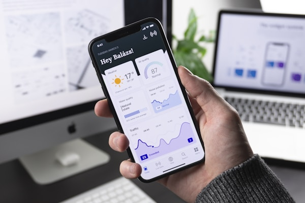

Projects & Certifications
Recent work and learning experiences

Accenture Data Analytics Simulation
Completed comprehensive course on Data Analytics & Visualization, focusing on real-world business scenarios and insights generation.

BCG Strategy Consulting
Virtual experience focusing on market research, financial modeling, and strategic data analysis for business decision-making.

Deloitte Data Analytics
Hands-on experience with data analysis and forensic technology using real-world case scenarios and business applications.